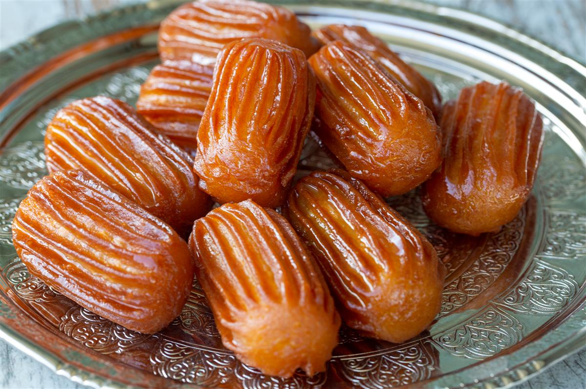

Sastojci za tijesto:
- 250 ml vode
- 250 ml mlijeka
- 1 filđan ulja
- 1 filđan šećera
- 18 žlica brašna ili 300 g
- 1/2 praška za pecivo
- 4 jaja
Sastojci za zaljev:
- 2 čaše vode
- 4 čaše šećera
- 1 vanilin šećer
- 1 feta limuna
- ulje za prženje tulumbi, najmanje 700 ml
Priprema
- Zaljev:
Sve sastojke za zaljev stavite u posudu i kuhajte. Odokativni omjer vode i šećera je da vode uvijek treba biti 2 prsta poviše šećera. Pustite da se sve kuha na laganoj vatri 20-30 minuta nakon što prokuha. Zaljev ne smije biti rijedak, niti pregust, već fino sirupast.
Ohladite ga na soboj temperaturi.
Zaljev se može skuhati dan ranije.
-
Tijesto:
Zakuhajte vodu, mlijeko, ulje i šećer.
Pomiješajte brašno i prašak za pecivo.
Maknite posudu s vatre pa dodajte brašno SVE odjednom, ne malo po malo. Snažno miješajte drvenom kuhačom dok se tijesto ne ujednači, zatim vratite na vatru i kuhajte na laganoj vatri stalno miješajući nekoliko minuta dok se tijesto ne počne odvajati od posude.
Ohladite. Dok se tijesto hladi povremeno ga promiješajte da se po vrhu ne napravi korica.
U hladnu smjesu dodajte 1 po 1 jaje. Svako jaje dobro umiješajte i kada se potpuno upije u tijesto, dodajte sljedeće. Tijesto će na kraju biti glatko, mekano i svilenkasto.
